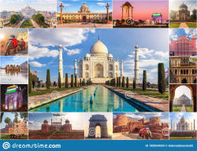
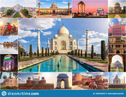
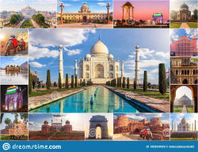

.jpg)
Let's Take a view of india and other information

Let's Gather some information about tourism in India
India (Hindi: Bhārat), officially the Republic of India (Hindi: Bhārat Gaṇarājya) is a country in South Asia. It is the second-most populous country, the seventh-largest country by land area, and the most populous democracy in the world. Bounded by the Indian Ocean on the south, the Arabian Sea on the southwest, and the Bay of Bengal on the southeast, it shares land borders with Pakistan to the west, China, Nepal, and Bhutan to the north; and Bangladesh and Myanmar to the east. In the Indian Ocean, India is in the vicinity of Sri Lanka and the Maldives; its Andaman and Nicobar Islands share a maritime border with Thailand, Myanmar and Indonesia.

Tourism in India has shown a phenomenal growth in the past decade. One of the reasons is
that
the Ministry of tourism, India has realized the immense potential of tourism in India during vacations.
India
travel tourism has grown rapidly with a great influx of tourists from all across the globe who have been
irresistibly attracted to the rich culture, heritage, and incredible natural beauty of India. India tourism
with
its foggy hill stations, captivating beaches, historical monuments, golden deserts, serene backwaters,
pilgrimage sites, rich wildlife, and colourful fairs capture the heart of every tourist. In addition, a
variety
of festivals, lively markets, vibrant lifestyle, and traditional Indian hospitality, will make your
experience
as an india tourist truly unforgettable and fantastic. Travel through the lovely Indian states and discover
closely the resplendent colors and rich cultural locales of this incredible land. Our India tourism guide
provides you a glimpse of travel and tourism in india ,india tourism information about south india tourism,
north India tourism, and all the major tourist destinations, and tourism services of India. For more
information
about travel and tourism India and tourism of India.